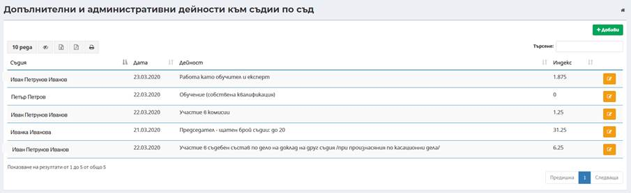
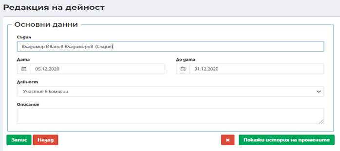
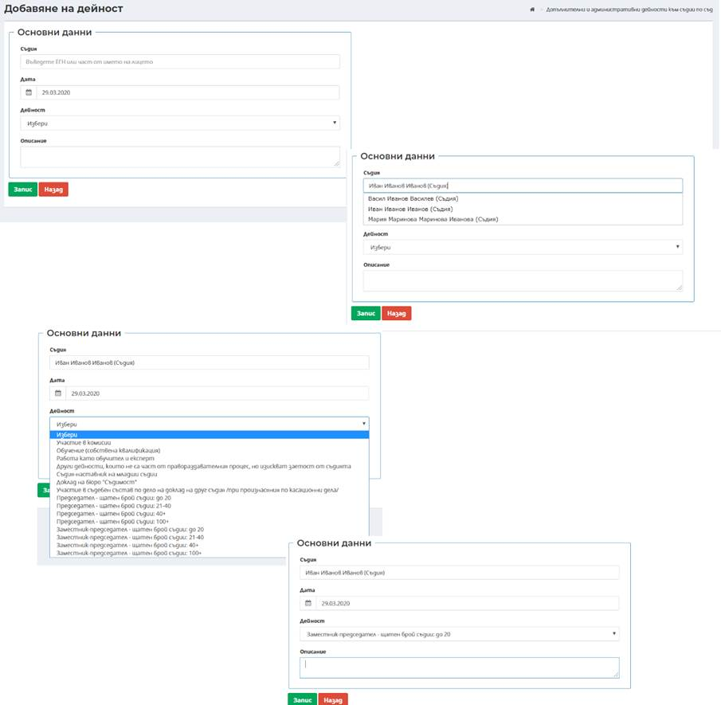
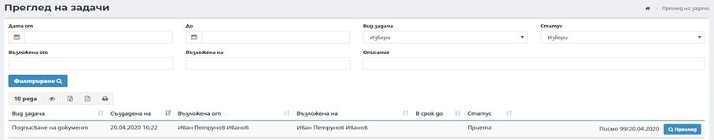
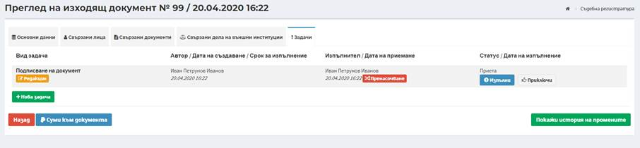
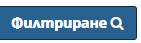
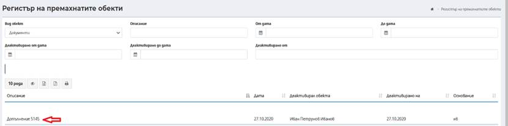
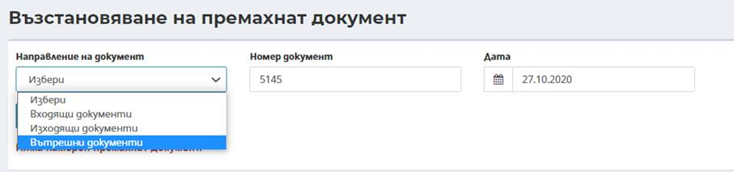
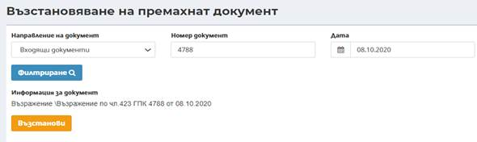
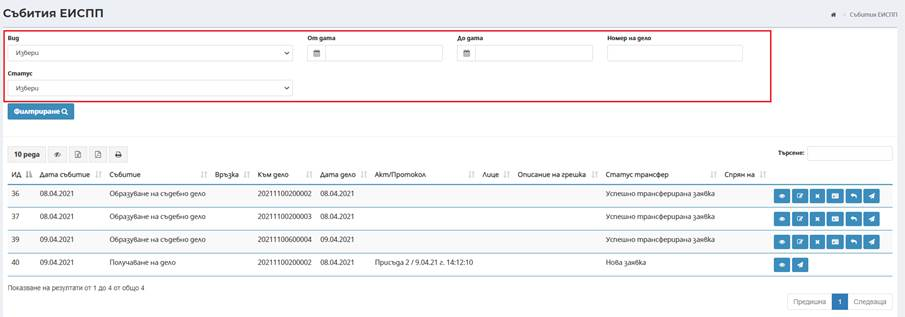

В меню Натовареност на съдии се извежда информация за всички допълнителни и административни дейности към съдии в съда. Има възможност за добавяне на допълнителни коефициенти в зависимост от натовареността на конкретния съдия.

Чрез бутон Добави може да се добави допълнителна или административна дейност на конкретен съдия чрез въвеждане на следните данни:

Съдия – Въвежда се ЕГН или част от името на лицето (минимум 3 последователни символа) на съдията;
Дата – въвежда се начална дата на допълнителната дейност;
Дейност – избира се от падащ списък с номенклатура дейността, която съдията извършва;
Описание – въвежда се допълнителна информация при необходимост. Полето не е със задължителен характер.
Важно! При грешна натовареност при допълнителни и административни дейности към съдии по съд, същата може да се премахне от Меню Управление - > Общи - >Натовареност на съдии. След избор на бутон редакция на реда на съответната натовареност се отваря диалогов прозорец, от където чрез бутон премахване натовареността може да се премахне.

Забележка: Една допълнителна дейност може да бъде добавена за един съдия само един път в рамките на една календарна година.
Визуализира се всички задачи и могат да бъдат прегледани, редактирани, приключени:

Има възможност задаване на филтриране чрез предефинирани критерии:
От дата – начална дата на период, в който е насочена задача;
До дата – крайна дата на период, в който е насочена задача;
Вид задача – избира се от падащ списък с номенклатура на видове задачи;
Статус – избира се от падащ списък с номенклатура за статус на задачи;
Възложена от – при въвеждане на минимум три последователни символа, системата автоматично търси и предлага за избор списък от потребители, които са насочили задачи;
Възложена на – при въвеждане на минимум три последователни символа, системата автоматично търси и предлага за избор списък от потребители, към които да бъде насочена задачата;
Описание – въвежда се текст за търсене в описание на задачи.
След избор на бутон Филтриране се извеждат всички задачи, отговарящи на заложените критерии.
Посредством бутон Преглед на реда на съответната задача може да се прегледа обекта (документа).

Под-меню Възстановяване на документ позволява възстановяването на изтрити изходящи, входящи и съпътстващи документи. Стъпките са описани в т. 9.4.4 Регистър на премахнати документи.
В под-меню Регистър на премахнати документи се извежда информация за всички изтрити входящи, изходящи и съпровождащи документи.
След избор на бутон

се отваря прозорец, в който се зареждат всички изтрити документи, със съответния регистрационен номер.

След избор на документа, който следва да бъде възстановен, неговият регистрационен номер и датата на която е създаден, се въвеждат в поле Номер на документ на под-меню Възстановяване на документ. В поле Направление на документ, посредством падащото меню се избира съответния документ, след което се избира бутон .

Отваря се прозорец, в който е изписан търсеният документ. След избор на бутон , документа се възстановява.

В под-меню ЕИСПП Събития се извежда информация за всички вече изпратени събития към ЕИСПП по наказателните дела.

Подменюто позволява списъка със събитията да се филтрира по различни критерии.